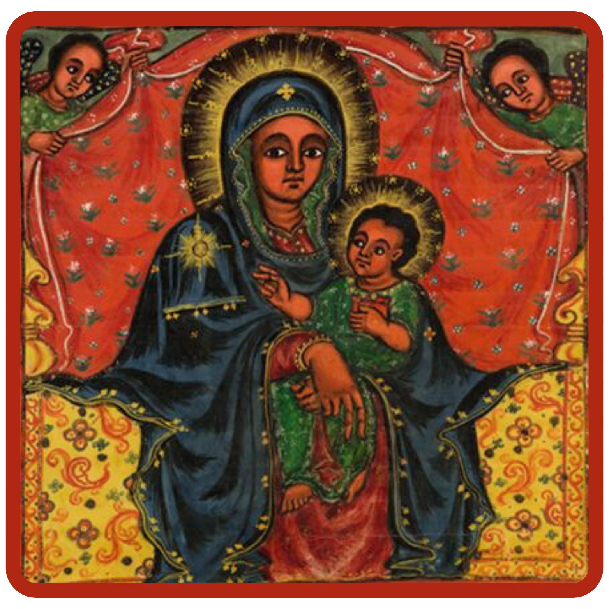

“I praise you seven times a day” ፨ “ስብዐ ለዕለትየ እሴብሐከ”
Psalm 118:164 ፨ መዝሙር ዘዳዊት ፻፲፰፡፻፷፬
This web app is designed to aid Orthodox Christians and catachumens towards a life of unceasing prayer. It provides access to essential daily prayers in multiple languages, including Amharic, English, Ge'ez, Spanish, and Tigrinya with phonetic transliterations to assist in learning and pronunciation.
For easy access and offline use, you can install this web app to your mobile home screen:
For easy access and offline use, you can also install this web app on your desktop computer:
The English translations provided are a work in progress, intended to be a more accurate improvement upon the few existing English resources. We have consulted several sources, including:
This web app is currently in a beta stage and is very much a work-in-progress. We are continuously working to improve this spiritual service and appreciate your patience with any technical issues that may occur. Your feedback is invaluable to us! Please use the "Share Feedback" button within the app to let us know your thoughts, suggestions, or any bugs you encounter.
This service is made with love for the glory of God and is managed by servants of the Oakland Debre Meheret Saint Michael Ethiopian Orthodox Tewahedo Church (EOTC) under the auspices of His Grace Archbishop Theophilus in the EOTC Diocese of Northern California, Nevada, and Arizona.
Thank you for your patience if a technical issue occurs. We are continuously working to improve this service, so please don't hesitate to submit your feedback below.